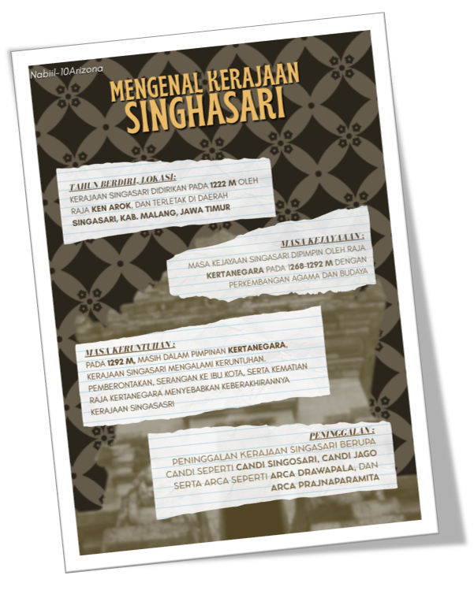

^ History Poster
In History, we learn about the different Hindu-Buddha Kingdom in Indonesia.
Each student gets assigned a kingdom to research. I got the Kingdom of Singhasari.
The objective to making the poster beside is to properly learn aboout the kingdom of Singhasari and find the following informations:
| Information | : |
|---|---|
| Name of the Kingdom | Kerajaan Singhasari |
| Location of the Kingdom | Singosari, Malang Regency, East Java |
| Year the Kingdom was founded | 1222 AD |
| Name of the Kings | Ken Arok, Anuspati, Tohjaya, Ranggawuni/Wisnuwardhana, and Kertanegara |
| Form of relics left by the Kingdom | Temples, Satues and Sculptures |
| Golden age | Golden age of Singasari is at the period of King Kertanegara, in his rule, Singasari achieved peak success in politics and religion. |
| Era of declining | Ironically, the declining era of Singasari is also at the time of King Kertanegara. It follows the assasination of said king. |
| Founding Period | The founder King, Ken Arok Founded the Kingdom in 1222 AD, after he successfully defeating King Kertajaya of Kediri Kingdom in the battle of Genter. |